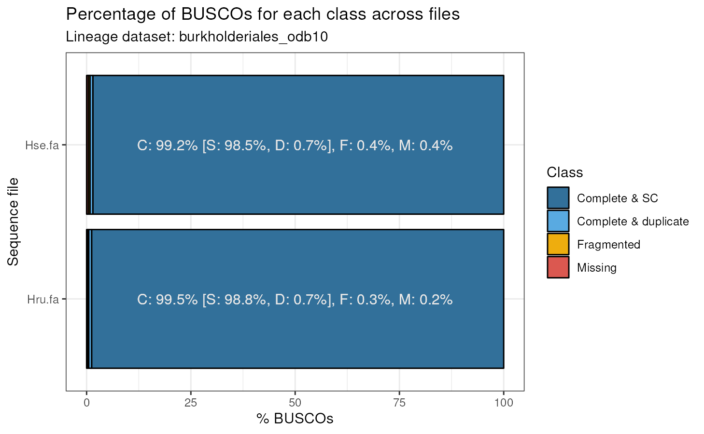

Assessing genome assembly quality
Fabricio Almeida-Silva
VIB-UGent Center for Plant Systems Biology, Ghent University, Ghent, BelgiumYves Van de Peer
VIB-UGent Center for Plant Systems Biology, Ghent University, Ghent, BelgiumSource:
vignettes/vignette_01_assessing_genome_assembly.Rmd
vignette_01_assessing_genome_assembly.RmdIntroduction
One of the most common metrics to assess the quality of genome
assemblies is BUSCO (best universal single-copy orthologs) (Simão et al. 2015). cogeqc allows
users to run BUSCO from an R session and visualize results graphically.
BUSCO summary statistics will help you assess which assemblies have high
quality based on the percentage of complete BUSCOs.
Installation
if(!requireNamespace('BiocManager', quietly = TRUE))
install.packages('BiocManager')
BiocManager::install("cogeqc")Running BUSCO
To run BUSCO from R, you will use the function
run_busco()1. Here, we will use an example FASTA file
containing the first 1,000 lines of the Herbaspirilllum seropedicae
SmR1 genome (GCA_000143225), which was downloaded from Ensembl
Bacteria. We will run BUSCO using burkholderiales_odb10 as the
lineage dataset. To view all available datasets, run
list_busco_datasets().
# Path to FASTA file
sequence <- system.file("extdata", "Hse_subset.fa", package = "cogeqc")
# Path to directory where BUSCO datasets will be stored
download_path <- paste0(tempdir(), "/datasets")
# Run BUSCO if it is installed
if(busco_is_installed()) {
run_busco(sequence, outlabel = "Hse", mode = "genome",
lineage = "burkholderiales_odb10",
outpath = tempdir(), download_path = download_path)
}The output will be stored in the directory specified in
outpath. You can read and parse BUSCO’s output with the
function read_busco(). For example, let’s read the output
of a BUSCO run using the genome of the green algae Ostreococcus
tauri. The output directory is /extdata.
# Path to output directory
output_dir <- system.file("extdata", package = "cogeqc")
busco_summary <- read_busco(output_dir)
busco_summary
#> Class Frequency Lineage
#> 1 Complete_SC 1412 chlorophyta_odb10
#> 2 Complete_duplicate 4 chlorophyta_odb10
#> 3 Fragmented 35 chlorophyta_odb10
#> 4 Missing 68 chlorophyta_odb10This is an example output for a BUSCO run with a single FASTA file.
You can also specify a directory containing multiple FASTA files in the
sequence argument of run_busco(). This way, BUSCO
will be run in batch mode. Let’s see what the output of BUSCO in batch
mode looks like:
data(batch_summary)
batch_summary
#> Class Frequency Lineage File
#> 1 Complete_SC 98.5 burkholderiales_odb10 Hse.fa
#> 2 Complete_SC 98.8 burkholderiales_odb10 Hru.fa
#> 3 Complete_duplicate 0.7 burkholderiales_odb10 Hse.fa
#> 4 Complete_duplicate 0.7 burkholderiales_odb10 Hru.fa
#> 5 Fragmented 0.4 burkholderiales_odb10 Hse.fa
#> 6 Fragmented 0.3 burkholderiales_odb10 Hru.fa
#> 7 Missing 0.4 burkholderiales_odb10 Hse.fa
#> 8 Missing 0.2 burkholderiales_odb10 Hru.faThe only difference between this data frame and the previous one is
the column File, which contains information on the
FASTA file. The example dataset batch_summary contains the
output of run_busco() using a directory containing two
genomes (Herbaspirillum seropedicae SmR1 and Herbaspirillum
rubrisubalbicans M1) as parameter to the sequence
argument.
Visualizing summary statistics
After using run_busco() and parsing its output with
read_busco(), users can visualize summary statistics with
plot_busco().
# Single FASTA file - Ostreococcus tauri
plot_busco(busco_summary)
# Batch mode - Herbaspirillum seropedicae and H. rubrisubalbicans
plot_busco(batch_summary)
We usually consider genomes with >90% of complete BUSCOs as having high quality. Thus, we can conclude that the three genomes analyzed here are high-quality genomes.
Session information
This document was created under the following conditions:
sessioninfo::session_info()
#> ─ Session info ───────────────────────────────────────────────────────────────
#> setting value
#> version R version 4.2.1 (2022-06-23)
#> os Ubuntu 20.04.4 LTS
#> system x86_64, linux-gnu
#> ui X11
#> language en
#> collate en_US.UTF-8
#> ctype en_US.UTF-8
#> tz UTC
#> date 2022-10-20
#> pandoc 2.18 @ /usr/local/bin/ (via rmarkdown)
#>
#> ─ Packages ───────────────────────────────────────────────────────────────────
#> package * version date (UTC) lib source
#> ape 5.6-2 2022-03-02 [1] RSPM (R 4.2.0)
#> aplot 0.1.8 2022-10-09 [1] RSPM (R 4.2.0)
#> BiocGenerics 0.42.0 2022-04-26 [1] Bioconductor
#> BiocManager 1.30.18 2022-05-18 [2] CRAN (R 4.2.1)
#> BiocStyle * 2.24.0 2022-04-26 [1] Bioconductor
#> Biostrings 2.64.1 2022-08-18 [1] Bioconductor
#> bitops 1.0-7 2021-04-24 [1] CRAN (R 4.2.0)
#> bookdown 0.29 2022-09-12 [1] RSPM (R 4.2.0)
#> bslib 0.4.0 2022-07-16 [2] RSPM (R 4.2.0)
#> cachem 1.0.6 2021-08-19 [2] CRAN (R 4.2.0)
#> cli 3.4.1 2022-09-23 [2] RSPM (R 4.2.0)
#> cogeqc * 1.1.8 2022-10-20 [1] Bioconductor
#> colorspace 2.0-3 2022-02-21 [1] CRAN (R 4.2.0)
#> crayon 1.5.2 2022-09-29 [2] RSPM (R 4.2.0)
#> desc 1.4.2 2022-09-08 [2] RSPM (R 4.2.0)
#> digest 0.6.30 2022-10-18 [2] RSPM (R 4.2.0)
#> dplyr 1.0.10 2022-09-01 [1] RSPM (R 4.2.0)
#> evaluate 0.17 2022-10-07 [2] RSPM (R 4.2.0)
#> fansi 1.0.3 2022-03-24 [2] CRAN (R 4.2.0)
#> farver 2.1.1 2022-07-06 [1] RSPM (R 4.2.0)
#> fastmap 1.1.0 2021-01-25 [2] CRAN (R 4.2.0)
#> fs 1.5.2 2021-12-08 [2] CRAN (R 4.2.0)
#> generics 0.1.3 2022-07-05 [1] RSPM (R 4.2.0)
#> GenomeInfoDb 1.32.4 2022-09-06 [1] Bioconductor
#> GenomeInfoDbData 1.2.8 2022-05-02 [1] Bioconductor
#> ggfun 0.0.7 2022-08-31 [1] RSPM (R 4.2.0)
#> ggplot2 3.3.6 2022-05-03 [1] RSPM (R 4.2.0)
#> ggplotify 0.1.0 2021-09-02 [1] RSPM (R 4.2.0)
#> ggtree 3.4.4 2022-09-27 [1] Bioconductor
#> glue 1.6.2 2022-02-24 [2] CRAN (R 4.2.0)
#> gridGraphics 0.5-1 2020-12-13 [1] RSPM (R 4.2.0)
#> gtable 0.3.1 2022-09-01 [1] RSPM (R 4.2.0)
#> highr 0.9 2021-04-16 [2] CRAN (R 4.2.0)
#> htmltools 0.5.3 2022-07-18 [2] RSPM (R 4.2.0)
#> igraph 1.3.5 2022-09-22 [1] RSPM (R 4.2.0)
#> IRanges 2.30.1 2022-08-18 [1] Bioconductor
#> jquerylib 0.1.4 2021-04-26 [2] CRAN (R 4.2.0)
#> jsonlite 1.8.2 2022-10-02 [2] RSPM (R 4.2.0)
#> knitr 1.40 2022-08-24 [2] RSPM (R 4.2.0)
#> labeling 0.4.2 2020-10-20 [1] CRAN (R 4.2.0)
#> lattice 0.20-45 2021-09-22 [3] CRAN (R 4.2.1)
#> lazyeval 0.2.2 2019-03-15 [1] CRAN (R 4.2.0)
#> lifecycle 1.0.3 2022-10-07 [2] RSPM (R 4.2.0)
#> magrittr 2.0.3 2022-03-30 [2] CRAN (R 4.2.0)
#> memoise 2.0.1 2021-11-26 [2] CRAN (R 4.2.0)
#> munsell 0.5.0 2018-06-12 [1] CRAN (R 4.2.0)
#> nlme 3.1-160 2022-10-10 [3] RSPM (R 4.2.0)
#> patchwork 1.1.2 2022-08-19 [1] RSPM (R 4.2.0)
#> pillar 1.8.1 2022-08-19 [2] RSPM (R 4.2.0)
#> pkgconfig 2.0.3 2019-09-22 [2] CRAN (R 4.2.0)
#> pkgdown 2.0.6 2022-07-16 [2] RSPM (R 4.2.0)
#> plyr 1.8.7 2022-03-24 [1] CRAN (R 4.2.0)
#> purrr 0.3.5 2022-10-06 [2] RSPM (R 4.2.0)
#> R6 2.5.1 2021-08-19 [2] CRAN (R 4.2.0)
#> ragg 1.2.3 2022-09-29 [2] RSPM (R 4.2.0)
#> Rcpp 1.0.9 2022-07-08 [2] RSPM (R 4.2.0)
#> RCurl 1.98-1.9 2022-10-03 [1] RSPM (R 4.2.0)
#> reshape2 1.4.4 2020-04-09 [1] CRAN (R 4.2.0)
#> rlang 1.0.6 2022-09-24 [2] RSPM (R 4.2.0)
#> rmarkdown 2.17 2022-10-07 [2] RSPM (R 4.2.0)
#> rprojroot 2.0.3 2022-04-02 [2] CRAN (R 4.2.0)
#> S4Vectors 0.34.0 2022-04-26 [1] Bioconductor
#> sass 0.4.2 2022-07-16 [2] RSPM (R 4.2.0)
#> scales 1.2.1 2022-08-20 [1] RSPM (R 4.2.0)
#> sessioninfo 1.2.2 2021-12-06 [2] RSPM (R 4.2.0)
#> stringi 1.7.8 2022-07-11 [2] RSPM (R 4.2.0)
#> stringr 1.4.1 2022-08-20 [2] RSPM (R 4.2.0)
#> systemfonts 1.0.4 2022-02-11 [2] RSPM (R 4.2.0)
#> textshaping 0.3.6 2021-10-13 [2] RSPM (R 4.2.0)
#> tibble 3.1.8 2022-07-22 [2] RSPM (R 4.2.0)
#> tidyr 1.2.1 2022-09-08 [1] RSPM (R 4.2.0)
#> tidyselect 1.2.0 2022-10-10 [1] RSPM (R 4.2.0)
#> tidytree 0.4.1 2022-09-26 [1] RSPM (R 4.2.0)
#> treeio 1.20.2 2022-08-14 [1] Bioconductor
#> utf8 1.2.2 2021-07-24 [2] CRAN (R 4.2.0)
#> vctrs 0.4.2 2022-09-29 [2] RSPM (R 4.2.0)
#> xfun 0.34 2022-10-18 [2] RSPM (R 4.2.0)
#> XVector 0.36.0 2022-04-26 [1] Bioconductor
#> yaml 2.3.6 2022-10-18 [2] RSPM (R 4.2.0)
#> yulab.utils 0.0.5 2022-06-30 [1] RSPM (R 4.2.0)
#> zlibbioc 1.42.0 2022-04-26 [1] Bioconductor
#>
#> [1] /__w/_temp/Library
#> [2] /usr/local/lib/R/site-library
#> [3] /usr/local/lib/R/library
#>
#> ──────────────────────────────────────────────────────────────────────────────